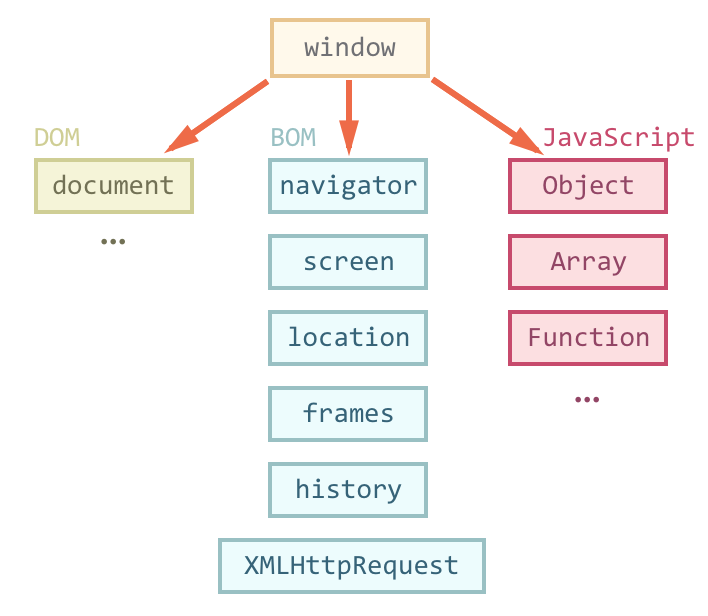
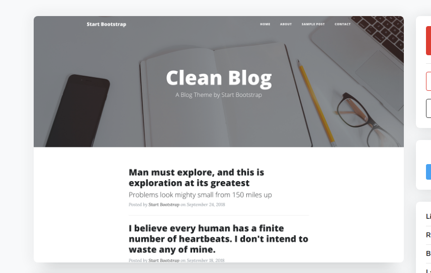

День 19

Yours Truly, Famous Inc.

Javascript или ECMAScript - это язык, который не обязательно должен работать в браузере.
Есть варианты языка которые работают на сервере или в микроконтроллерах (Node.js, johnny-five).
JS - это ООП язык
$obj->method(); // phpobj.method(); // js
Когда js работает в браузере у него есть ряд уже инициализированных объектов.
Главный объект станицы - это window, он включает в себя все остальные. Поэтому его
можно упускать при обращении.
Все объекты в window делят на три группы - DOM(Document Object Model), BOM (Browser Object
Model) и объекты языка Javascript.

windowhistoryhistory.back()
DOM - объектная модель документа представляет HTML дерево в виде объектов, доступных для изменения через JavaScript.

//JSdocumentdocument.documentElementdocument.bodydocument.body.styledocument.body.style.backgroundColor
Существует масса платных и бесплатных шаблонов html/css, почти все из них можно установить на Laravel проект.
Для этого необходимо выделить все основные страницы шаблона,
например, главная страница, личный кабинет, форма аутентицикации, и т.д.,
и создать для каждой страницы роут и представление в resources/views
Практически все шаблоны имеют свои дополнительные CSS, JS файлы и картинки.
Если в проекте не предусмотрено несколько вариантов шаблонов,
то можно все дополнительные файлы переместить в папку public.
Но, если шаблонов может быть несколько, шаблон для админки, шаблон для магазина,
шаблон для блога и т.д., то необходимо в папке public создавать отдельные папки и уже в них хранить.

Задачник День 19
Прочесть документацию git
Скачать дома проект test с репозитория
Внести правки в проект, выложить оббратно в github
Прочитать документацию по миграциям
По уроку установить шаблон про уроку, выложить на github и отправить мне ссылку